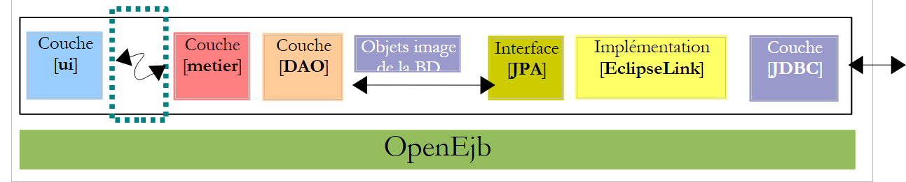
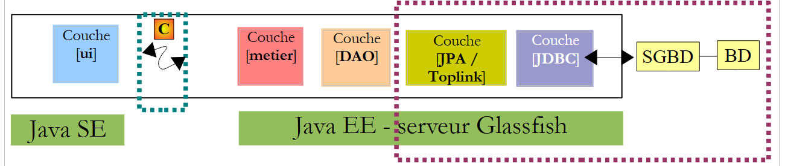
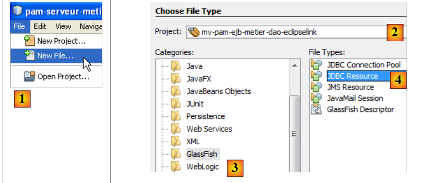
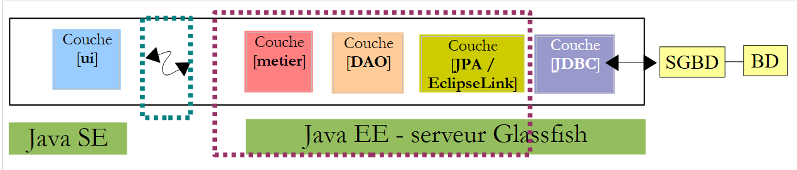
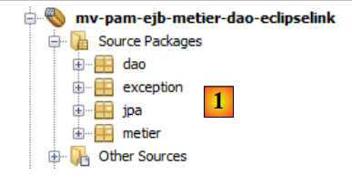
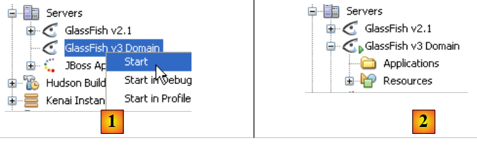
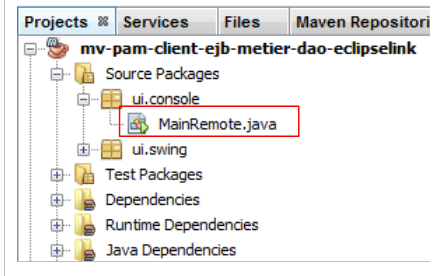

7. الإصدار 3: نقل تطبيق PAM إلى خادم تطبيقات GlassFish
نقترح وضع مكونات EJB من طبقات [الأعمال] و[DAO] في بنية OpenEJB/EclipseLink داخل حاوية خادم تطبيقات GlassFish.
التنفيذ الحالي باستخدام OpenEJB / EclipseLink
 |
فيما سبق، تستخدم طبقة [ui] الواجهة البعيدة لطبقة [business].
اختبرنا سياقين للتنفيذ: محلي وعن بُعد. في الوضع الأخير، عملت طبقة [ui] كعميل لطبقة [business]، التي يتم تنفيذها بواسطة EJBs. للعمل في وضع العميل/الخادم، حيث يعمل العميل والخادم في جهازي JVM منفصلين، سنقوم بنشر طبقات [business، DAO، JPA] على خادم GlassFish Java EE. هذا الخادم مضمن في NetBeans.
التنفيذ الذي سيتم بناؤه باستخدام خادم Glassfish
 |
- ستعمل طبقة [ui] في بيئة Java SE (الإصدار القياسي)
- ستعمل طبقات [منطق الأعمال، DAO، JPA] في بيئة Java EE (Enterprise Edition) على خادم GlassFish v3
- سيتواصل العميل مع الخادم عبر شبكة TCP/IP. الاتصال الشبكي شفاف بالنسبة للمطور، على الرغم من أنه يجب أن يدرك أن العميل والخادم يتبادلان كائنات متسلسلة للتواصل، وليس مراجع الكائنات. يُسمى بروتوكول الشبكة المستخدم لهذا الاتصال RMI (استدعاء الطريقة عن بُعد)، وهو بروتوكول قابل للاستخدام فقط بين تطبيقين Java.
- سيكون تطبيق JPA المستخدم على خادم GlassFish هو EclipseLink.
7.1. الجزء الخاص بالخادم (server- ) من تطبيق PAM للعميل/الخادم
7.1.1. بنية التطبيق
نقوم هنا بفحص المكون الخاص بجانب الخادم الذي سيتم استضافته بواسطة حاوية EJB3 الخاصة بخادم Glassfish:
 |
الهدف هو نقل ما تم تطويره واختباره بالفعل باستخدام حاوية OpenEJB إلى خادم Glassfish. هذه هي ميزة OpenEJB، وبشكل عام، ميزة حاويات EJB المدمجة: فهي تسمح لنا باختبار التطبيق في بيئة تشغيل مبسطة. بمجرد اختبار التطبيق، كل ما يتبقى هو نقله إلى الخادم المستهدف، وهو في هذه الحالة خادم GlassFish.
7.1.1.1. مشروع NetBeans
لنبدأ بإنشاء مشروع NetBeans جديد:
 |
- في [1]، مشروع جديد
- في [2]، حدد فئة Maven، وفي [3]، حدد نوع الوحدة النمطية EJB. والهدف من ذلك هو إنشاء مشروع سيتم استضافته وتشغيله بواسطة حاوية EJB، وتحديدًا خادم GlassFish.
 |
- باستخدام الزر [4a]، حدد المجلد الأصلي لمجلد المشروع أو اكتب اسمه مباشرةً في [4b].
- في [5]، قم بتسمية المشروع
- في [6]، حدد خادم التطبيق الذي سيتم تشغيله عليه. الخادم المحدد هنا هو أحد الخوادم الظاهرة في علامة التبويب [Runtime / Servers]، وهو في هذه الحالة GlassFish v3.
- في [7]، حدد إصدار Java EE.
 |
- في [1]، المشروع الجديد. يختلف هذا المشروع عن مشروع Java القياسي في عدة نواحٍ:
- يتم إنشاء فرع [مصادر أخرى] [2] تلقائيًا. وسيحتوي، على وجه الخصوص، على ملف [persistence.xml] الذي يقوم بتكوين طبقة JPA،
- إذا قمت بإنشاء المشروع (Build)، تظهر تبعية [javaee-api-6.0] [3]. وهي من النوع "المقدمة" لأنها يتم توفيرها في وقت التشغيل بواسطة حاوية EJB في Glassfish.
7.1.1.2. تكوين طبقة الاستمرارية
نعني بـ "تكوين طبقة الاستمرارية" كتابة ملف [persistence.xml]، الذي يحدد:
- تنفيذ JPA المراد استخدامه
- تعريف مصدر البيانات الذي تستخدمه طبقة JPA. سيكون هذا مصدر JDBC يديره خادم GlassFish.
 |
يمكننا المضي قدماً على النحو التالي. أولاً، في علامة التبويب [Runtime / Databases]، سنقوم بإنشاء [1] اتصال بقاعدة بيانات MySQL5 / dbpam_eclipselink:
 |
بمجرد الانتهاء من ذلك، يمكننا الانتقال إلى إنشاء مورد JDBC الذي تستخدمه وحدة EJB:
 |
- في [1]، قم بإنشاء ملف جديد — تأكد من تحديد مشروع EJB قبل تنفيذ هذه العملية
- في [2]، حدد مشروع EJB
- في [3]، حدد فئة [Glassfish]
- في [4]، حدد "إنشاء مورد JDBC"
 |
- في [5]، حدد أن مورد JDBC سيستخدم تجمع اتصالات جديد. لاحظ أن تجمع الاتصالات هو مجموعة من الاتصالات المفتوحة المستخدمة لتسريع تفاعلات التطبيق مع قاعدة البيانات.
- في [6]، قم بتعيين اسم JNDI لمورد JDBC الذي تم إنشاؤه. يمكن أن يكون هذا الاسم أي شيء، ولكنه غالبًا ما يأخذ شكل jdbc/name. سيتم استخدام اسم JNDI هذا في ملف [persistence.xml] لتعيين مصدر البيانات الذي يجب أن يستخدمه تطبيق JPA.
- في [7]، قم بتسمية مجموعة الاتصالات التي سيتم إنشاؤها بأي اسم
- في القائمة المنسدلة [8]، حدد اتصال JDBC الذي تم إنشاؤه مسبقًا لقاعدة بيانات MySQL / dbpam_eclipselink.
- في [9]، ملخص لخصائص تجمع الاتصالات — اترك كل شيء كما هو
 |
- في [10]، يمكنك تحديد العديد من خصائص تجمع الاتصالات — اترك القيم الافتراضية
- في [11]، بعد إكمال المعالج لإنشاء مورد JDBC لوحدة EJB، تم إنشاء ملف [glassfish-resources.xml] في فرع [Other Sources]. محتويات هذا الملف هي كما يلي:
ملف [glassfish-resources.xml] هو ملف XML يحتوي على جميع البيانات التي جمعها المعالج. سيستخدمه NetBeans لطلب إنشاء مورد JDBC المطلوب لهذه الوحدة النمطية عند نشر وحدة EJB على خادم GlassFish.
يمكنك الآن إنشاء ملف [persistence.xml]، الذي سيقوم بتكوين طبقة JPA في وحدة EJB:
 |
- في [1]، أنشئ ملفًا جديدًا — تأكد من تحديد مشروع EJB قبل تنفيذ هذه العملية
- في [2]، حدد مشروع EJB
- في [3]، حدد فئة [Persistence]
- في [4]، قم بإنشاء وحدة استمرارية
 |
- في [5]، قم بتسمية وحدة الاستمرارية
- في [6]، يتم عرض عدة تطبيقات JPA. هنا، حدد [EclipseLink]. يمكن استخدام تطبيقات أخرى بشرط تضمين المكتبات التي تنفذها جنبًا إلى جنب مع مكتبات خادم GlassFish.
- في القائمة المنسدلة [7]، حدد مصدر بيانات JDBC [jdbc/dbpam_eclipselink] الذي تم إنشاؤه للتو.
- في [8]، حدد أن المعاملات تدار بواسطة حاوية EJB
- في [9]، حدد أنه لا يجب إجراء أي عمليات على مصدر البيانات عند نشر وحدة EJB على الخادم. وذلك لأن وحدة EJB ستستخدم قاعدة بيانات [dbpam_eclipselink] التي تم إنشاؤها بالفعل.
- في نهاية المعالج، تم إنشاء ملف [persistence.xml] [10]. ومحتواه كما يلي:
<?xml version="1.0" encoding="UTF-8"?>
<!DOCTYPE resources PUBLIC "-//GlassFish.org//DTD GlassFish Application Server 3.1 Resource Definitions//EN" "http://glassfish.org/dtds/glassfish-resources_1_5.dtd">
<resources>
<jdbc-resource enabled="true" jndi-name="jdbc/dbpam_eclipselink" object-type="user" pool-name="dbpamEclipselinkConnectionPool">
<description/>
</jdbc-resource>
<jdbc-connection-pool allow-non-component-callers="false" associate-with-thread="false" connection-creation-retry-attempts="0" connection-creation-retry-interval-in-seconds="10" connection-leak-reclaim="false" connection-leak-timeout-in-seconds="0" connection-validation-method="auto-commit" datasource-classname="com.mysql.jdbc.jdbc2.optional.MysqlDataSource" fail-all-connections="false" idle-timeout-in-seconds="300" is-connection-validation-required="false" is-isolation-level-guaranteed="true" lazy-connection-association="false" lazy-connection-enlistment="false" match-connections="false" max-connection-usage-count="0" max-pool-size="32" max-wait-time-in-millis="60000" name="dbpamEclipselinkConnectionPool" non-transactional-connections="false" pool-resize-quantity="2" res-type="javax.sql.DataSource" statement-timeout-in-seconds="-1" steady-pool-size="8" validate-atmost-once-period-in-seconds="0" wrap-jdbc-objects="false">
<property name="URL" value="jdbc:mysql://localhost:3306/dbpam_eclipselink"/>
<property name="User" value="root"/>
<property name="Password" value=""/>
</jdbc-connection-pool>
</resources>
- السطر 3: اسم وحدة الاستمرارية [mv-pam-ejb-metier-dao-eclipselinkPU] ونوع المعاملة (JTA لحاوية EJB)
- السطر 5: اسم JNDI لمصدر البيانات المستخدم من قبل طبقة الاستمرارية: jdbc/dbpam_eclipselink
- السطر 6: لم يتم تحديد كيانات JPA. سيتم البحث عنها في مسار فئة وحدة EJB.
- لم يتم تحديد اسم تطبيق JPA (Hibernate، EclipseLink، إلخ) المستخدم. في هذه الحالة، يستخدم GlassFish v3 EclipseLink بشكل افتراضي.
7.1.1.3. إدراج طبقات [JPA، DAO، Business]
الآن بعد تعريف ملف [persistence.xml]، يمكننا المضي قدمًا لإدراج طبقات [business، DAO، JPA] لتطبيق المؤسسة [pam] في المشروع:
 |
هذه الطبقات الثلاث مطابقة لما كانت عليه في OpenEJB. يمكننا ببساطة النسخ واللصق بين المشروعين. وهذا ما نقوم به الآن:
 |
- في [1]، نتيجة نسخ حزم [jpa، dao، business، exception] من مشروع [mv-pam-openejb-eclipselink] إلى وحدة EJB [mv-pam-ejb-business-dao-jpa-eclipselink]
7.1.1.4. تكوين خادم GlassFish
لا يزال يتعين علينا تكوين خادم GlassFish في مجالين:
- يتم تنفيذ طبقة JPA بواسطة EclipseLink. نحتاج إلى التأكد من أن خادم GlassFish يحتوي على المكتبات اللازمة لتنفيذ JPA هذا.
- مصدر البيانات هو قاعدة بيانات MySQL. نحتاج إلى التأكد من أن خادم GlassFish يحتوي على برنامج تشغيل JDBC لنظام إدارة قاعدة البيانات هذا.
قد تكتشف أن هذه المكتبات مفقودة عند نشر وحدة EJB. فيما يلي إحدى الطرق العديدة لإضافة المكتبات المفقودة إلى خادم GlassFish:
 |
- في [1]، اعرض خصائص خادم GlassFish
- في [2]، لاحظ مجلد نطاقات الخادم. سنشير إليه باسم <domains>
- في المجلد <domains>\domain1\lib، ضع المكتبات المفقودة. في المثال، تمت إضافة مكتبات Hibernate (lib/hibernate-tools) ومحرك MySQL JDBC (lib/misc). بشكل افتراضي، يتضمن خادم GlassFish مكتبات EclipseLink. لذلك سنقوم فقط بإضافة محرك MySQL JDBC.
 |
- في [1]، في علامة التبويب [Services]، نقوم بتشغيل خادم GlassFish v3
- في [2]، يكون نشطًا
7.1.1.5. نشر وحدة EJB
سنقوم الآن بنشر وحدة EJB على خادم GlassFish:
 |
- في [1]، تم نشر وحدة EJB
- في [2]، يتم تحديث شجرة خادم GlassFish
- في [3]، بعد النشر، تظهر وحدة EJB في فرع [Applications] لخادم GlassFish
- في [4]، تم إنشاء مورد JDBC [jdbc / dbpam_eclipselink] على خادم GlassFish. تذكر أننا قمنا بتعريفه في القسم 7.1.1.2.
أثناء النشر، يسجل خادم GlassFish المعلومات التالية في وحدة التحكم:
<?xml version="1.0" encoding="UTF-8"?>
<persistence version="2.0" xmlns="http://java.sun.com/xml/ns/persistence" xmlns:xsi="http://www.w3.org/2001/XMLSchema-instance" xsi:schemaLocation="http://java.sun.com/xml/ns/persistence http://java.sun.com/xml/ns/persistence/persistence_2_0.xsd">
<persistence-unit name="mv-pam-ejb-metier-dao-eclipselinkPU" transaction-type="JTA">
<jta-data-source>jdbc/dbpam_eclipselink</jta-data-source>
<exclude-unlisted-classes>false</exclude-unlisted-classes>
<properties/>
</persistence-unit>
</persistence>
لاحظ أن الأسطر
- 3 و 6 و 8 و 11: أسماء JNDI القابلة للنقل لـ EJBs التي تم نشرها. قدمت Java EE 6 مفهوم أسماء JNDI القابلة للنقل. وهذا يشير إلى اسم JNDI معترف به من قبل جميع خوادم Java EE 6. مع Java EE 5، تكون أسماء JNDI خاصة بالخادم المستخدم.
- 4 و7 و9 و12: أسماء JNDI لـ EJBs التي تم نشرها بتنسيق خاص بـ GlassFish v3.
ستكون هذه الأسماء مفيدة لتطبيق وحدة التحكم الذي سنقوم بكتابته لاستخدام وحدة EJB التي تم نشرها.
7.2. عميل وحدة التحكم - الإصدار 1
الآن بعد أن قمنا بنشر جانب الخادم من تطبيق العميل/الخادم الخاص بنا، سنقوم بفحص جانب العميل [1]:
 |
7.2.1. مشروع العميل
نقوم بإنشاء مشروع Maven جديد من نوع [تطبيق Java] باسم [mv-pam-client-ejb-metier-dao-eclipselink]:
 |
- في [1]، مشروع العميل
في ملف [pom.xml]، نضيف التبعيات التالية:
- الأسطر 31–35: التبعية لمكتبة [gf-client]، التي تسمح لعميل Classfish بالتواصل مع خادم بعيد،
- الأسطر 36–41: التبعية لمشروع Maven الخاص بوحدة EJB. هنا، نريد استرداد تعريفات كيانات JPA والواجهات المختلفة، بالإضافة إلى تعريف فئة الاستثناء [PamException]،
من مشروع [mv-pam-openejb-eclipselink]، ننسخ فئة [MainRemote]:
 |
يجب أن تحصل فئة [MainRemote] على مرجع إلى EJB في طبقة [business]. يتغير كود فئة [MainRemote] على النحو التالي:
<project xmlns="http://maven.apache.org/POM/4.0.0" xmlns:xsi="http://www.w3.org/2001/XMLSchema-instance"
xsi:schemaLocation="http://maven.apache.org/POM/4.0.0 http://maven.apache.org/xsd/maven-4.0.0.xsd">
<modelVersion>4.0.0</modelVersion>
<groupId>istia.st</groupId>
<artifactId>mv-pam-client-ejb-metier-dao-eclipselink</artifactId>
<version>1.0-SNAPSHOT</version>
<packaging>jar</packaging>
<name>mv-pam-client-ejb-metier-dao-eclipselink</name>
<url>http://maven.apache.org</url>
<repositories>
<repository>
<url>http://download.eclipse.org/rt/eclipselink/maven.repo/</url>
<id>eclipselink</id>
<layout>default</layout>
<name>Repository for library Library[eclipselink]</name>
</repository>
<repository>
<url>http://repo1.maven.org/maven2/</url>
<id>swing-layout</id>
<layout>default</layout>
<name>Repository for library Library[swing-layout]</name>
</repository>
</repositories>
<properties>
<project.build.sourceEncoding>UTF-8</project.build.sourceEncoding>
</properties>
<dependencies>
<dependency>
<groupId>org.glassfish.appclient</groupId>
<artifactId>gf-client</artifactId>
<version>3.1.1</version>
</dependency>
<dependency>
<groupId>${project.groupId}</groupId>
<artifactId>mv-pam-ejb-metier-dao-eclipselink</artifactId>
<version>${project.version}</version>
<type>ejb</type>
</dependency>
<dependency>
<groupId>org.swinglabs</groupId>
<artifactId>swing-layout</artifactId>
<version>1.0.3</version>
</dependency>
</dependencies>
</project>
- السطر 6: تهيئة سياق JNDI لخادم GlassFish.
- السطر 8: يتم الاستعلام عن سياق JNDI هذا للحصول على مرجع للواجهة البعيدة لطبقة [الأعمال]. وفقًا لسجلات GlassFish، نعلم أن الواجهة البعيدة لطبقة [الأعمال] لها اسمان محتملان:
// it's OK - we can ask for the payslip
FeuilleSalaire feuilleSalaire = null;
IMetierRemote metier = null;
try {
// context JNDI of Glassfish server
InitialContext initialContext = new InitialContext();
// business layer instantiation
metier = (IMetierRemote) initialContext.lookup("java:global/istia.st_mv-pam-ejb-metier-dao-eclipselink_ejb_1.0-SNAPSHOT/Metier!metier.IMetierRemote");
// wage sheet calculation
feuilleSalaire = metier.calculerFeuilleSalaire(args[0], nbHeuresTravaillées, nbJoursTravaillés);
} catch (PamException ex) {
System.err.println("L'erreur suivante s'est produite : "
+ ex.getMessage());
return;
} catch (Exception ex) {
System.err.println("L'erreur suivante s'est produite : "
+ ex.toString());
return;
}
السطر 1: اسم JNDI الذي يمكن استخدامه مع أي خادم تطبيقات Java EE 6. السطر 2: اسم JNDI الخاص بـ GlassFish. في الكود، في السطر 9، نستخدم اسم JNDI القابل للنقل.
- بقيت بقية الكود دون تغيير
 |
في [1]، نقوم بتكوين المشروع لتشغيل فئة [MainRemote] مع المعلمات. إذا سارت الأمور على ما يرام، فإن تشغيل المشروع سيعطي النتيجة التالية:
إذا تم إدخال رقم ضمان اجتماعي غير صحيح في الخصائص، يتم الحصول على النتيجة التالية:
7.3. وحدة تحكم العميل - الإصدار 2
في الإصدارات السابقة، تم تكوين بيئة JNDI لخادم Glassfish باستخدام ملف [jndi.properties] الموجود في مكان ما ضمن أرشيفات المشروع. ومحتواه الافتراضي هو كما يلي:
تحدد السطران 7 و 8 جهاز خدمة JNDI ومنفذ الاستماع الخاص به. لا يسمح لك هذا الملف بالاستعلام عن خادم JNDI بخلاف localhost أو خادم يعمل على منفذ بخلاف المنفذ 3700. إذا كنت ترغب في تغيير هذين الإعدادين، يمكنك إنشاء ملف [jndi.properties] خاص بك أو استخدام تكوين Spring. سنقوم بشرح التقنية الأخيرة.
نبدأ بإنشاء مشروع جديد استنادًا إلى المشروع الأولي [pam-client-metier-dao-jpa-eclipselink].
 |
- في [1]، يظهر المشروع الجديد
- في [2]، ملف تكوين Spring [spring-config-client.xml]. ومحتوياته كالتالي:
ملف تكوين Spring هو كما يلي:
# accès JNDI à Sun Application Server
java.naming.factory.initial=com.sun.enterprise.naming.SerialInitContextFactory
java.naming.factory.url.pkgs=com.sun.enterprise.naming
# Required to add a javax.naming.spi.StateFactory for CosNaming that
# supports dynamic RMI-IIOP.
java.naming.factory.state=com.sun.corba.ee.impl.presentation.rmi.JNDIStateFactoryImpl
org.omg.CORBA.ORBInitialHost=localhost
org.omg.CORBA.ORBInitialPort=3700
هنا نستخدم علامة <jee> (السطر 14) التي تم تقديمها في Spring 2.0. يتطلب استخدام هذه العلامة تعريف المخطط الذي تنتمي إليه، السطور 4 و 10 و 11.
- السطر 14: تُستخدم علامة <jee:jndi-lookup> للحصول على مرجع كائن من خدمة JNDI. هنا، نربط الحبة المسماة "metier" بمورد JNDI المرتبط بـ EJB [Metier]. اسم JNDI المستخدم هنا هو الاسم القابل للنقل (Java EE 6) لـ EJB.
- يصبح محتوى ملف [jndi.properties] هو محتوى العلامة <jee:environment> (السطر 15)، والتي تُستخدم لتعريف معلمات الاتصال لخدمة JNDI.
تتغير الفئة الرئيسية [MainRemote] على النحو التالي:
<?xml version="1.0" encoding="UTF-8"?>
<beans xmlns="http://www.springframework.org/schema/beans" xmlns:xsi="http://www.w3.org/2001/XMLSchema-instance"
xmlns:tx="http://www.springframework.org/schema/tx"
xmlns:jee="http://www.springframework.org/schema/jee"
xsi:schemaLocation="
http://www.springframework.org/schema/beans
http://www.springframework.org/schema/beans/spring-beans-2.0.xsd
http://www.springframework.org/schema/tx
http://www.springframework.org/schema/tx/spring-tx-2.0.xsd
http://www.springframework.org/schema/jee
http://www.springframework.org/schema/jee/spring-jee-2.0.xsd">
<!-- business -->
<jee:jndi-lookup id="metier" jndi-name="java:global/istia.st_mv-pam-ejb-metier-dao-eclipselink_ejb_1.0-SNAPSHOT/Metier!metier.IMetierRemote">
<jee:environment>
java.naming.factory.initial=com.sun.enterprise.naming.SerialInitContextFactory
java.naming.factory.url.pkgs=com.sun.enterprise.naming
java.naming.factory.state=com.sun.corba.ee.impl.presentation.rmi.JNDIStateFactoryImpl
org.omg.CORBA.ORBInitialHost=localhost
org.omg.CORBA.ORBInitialPort=3700
</jee:environment>
</jee:jndi-lookup>
</beans>
السطران 7–8: يُطلب من Spring مرجع النوع [IMetierRemote] في طبقة [business]. يضفي هذا الحل مرونة على بنية نظامنا. في الواقع، إذا أصبح EJB في طبقة [business] محليًا — أي تم تنفيذه في نفس JVM مثل عميل [MainRemote] الخاص بنا — فسيظل كود العميل دون تغيير. ولن يتغير سوى محتويات ملف [spring-config-client.xml]. وعندئذٍ سيكون لدينا تكوين مشابه لهندسة Spring/JPA التي تمت مناقشتها في القسم 5.11.
ندعو القراء إلى اختبار هذه النسخة الجديدة.
7.4. عميل Swing
سنقوم الآن بإنشاء عميل Swing لتطبيق EJB الخاص بنا الذي يعمل بنظام العميل/الخادم.
 |
يجب أن يتضمن ملف [pom.xml] التبعيات الضرورية لتطبيقات Swing:
أعلاه، تمت كتابة فئة [PamJFrame] في الأصل لتعمل في بيئة Spring/JPA:
 |
والآن يجب أن تصبح هذه الفئة العميل البعيد لـ EJB تم نشره على خادم Glassfish.
 |
تمرين عملي: باتباع مثال عميل وحدة التحكم [ui.console.MainRemote] في المشروع، قم بتعديل طريقة استخدام الأسلوب [doMyInit] (انظر القسم 5.12.4) في فئة [PamJFrame] للحصول على مرجع إلى طبقة [business]، التي أصبحت الآن بعيدة.